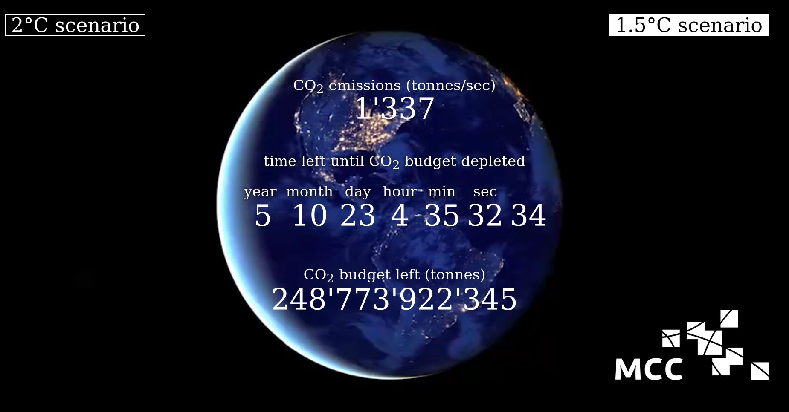
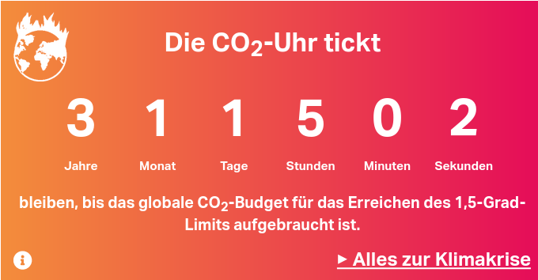
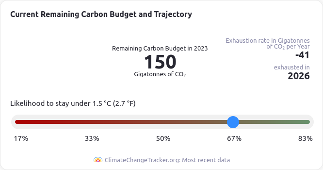
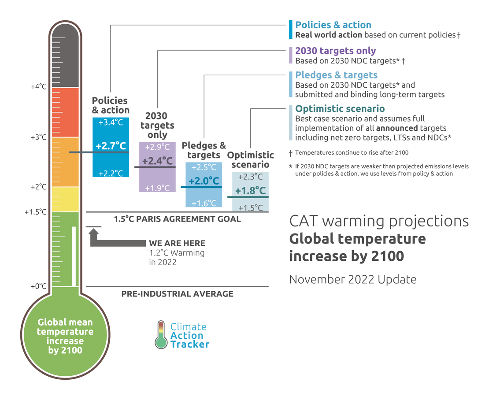
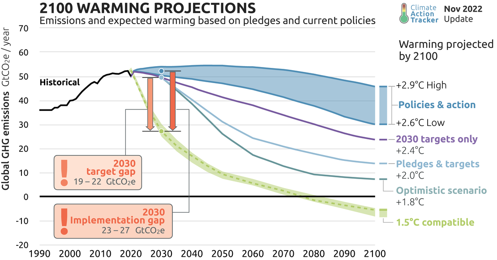
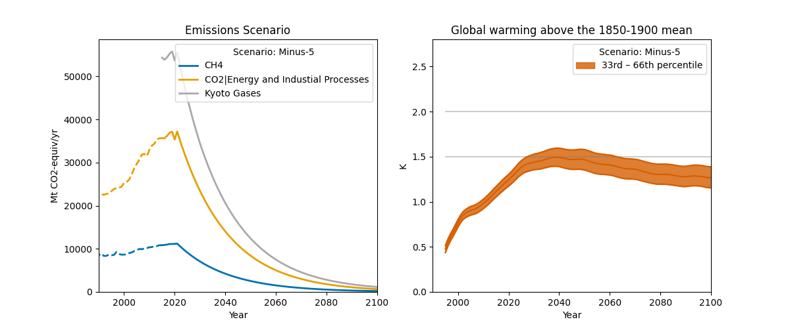
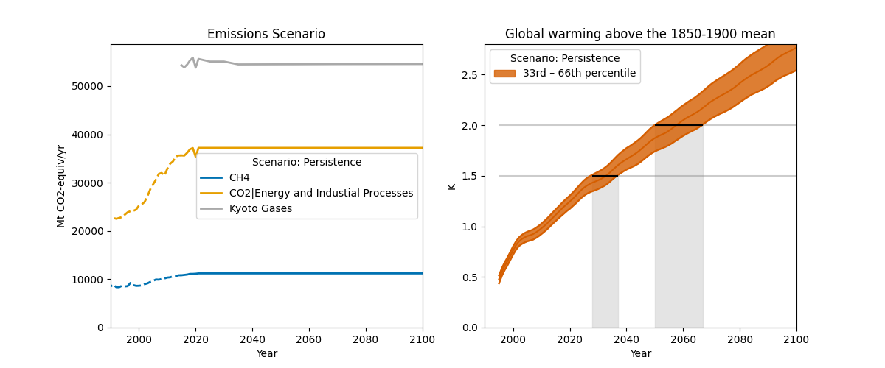
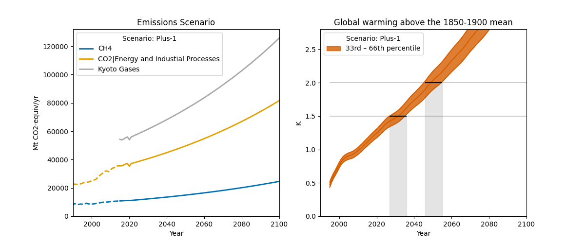
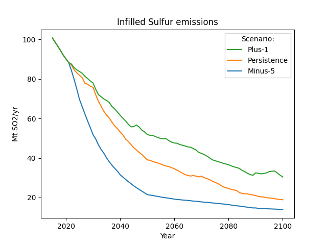
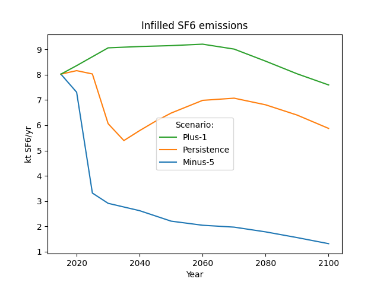

![]()
In 2015 the legally binding Paris Agreement included the overarching goals of holding
“the increase in the global average temperature to well below 2 °C above pre-industrial levels and pursuing efforts to limit the temperature increase to 1.5 °C above pre-industrial levels, recognizing that this would significantly reduce the risks and impacts of climate change”.
The question of which temperature level will be reached when is thus crucial. There exist a number of projects, reports from international organizations, as well as research papers aiming to answer the question what level of global temperature rise will be reached at the end of the century or how big the gap to scenarios consistent with temperature targets is. This is done under consideration of pledges and Nationally Determined Contributions (NDCs) of countries or analyzing currently implemented or planned policies, for example:
- the UNEP Emissions Gap Reporte reports,
- the Climate Action Tracker,
- assessments published by the UNFCCC as NDC synthesis reports, or
- the IEA.
The Remaining Carbon Budget approach is another widely used metric to track the progress, or rather non-progress, in keeping below the agreed temperature limits. It is most often reported as n years remaining until the budget is used up and often depicted as a countdown clock, by media and research institutes alike.



While the Budget approach is liked by NGOs and activists as it can be used to clearly define the remaining shares of countries, cities, or sectors and is also used in legislation, for example in the UK Carbon Budgets, it has been criticized a lot. Changes in input or reference data, uncertainties in the climate response, and definitional issues have led Glen Peters to ask in Beyond carbon budgets whether the
“carbon budget concept has perhaps served its purpose, time is short. To enact policy, a carbon budget is woefully too simplified.”
Fully reproducible Remaining Carbon Budgets, which are required to disentangle the differences between reported budgets, have only recently become available, see for example (Nicholls et al. 2020) and the AR6 Carbon Budget Calculations on GitHub.
Despite efforts to improve the understanding and comparability of the Remaining Carbon Budget approach there remains confusion when updates are published. Recently, the Indicators of Global Climate Change initiative included an update of the AR6 WGI budget, which shortened the time until the budget will be used up by about two years. Some media adopted their online trackers, for example the German daily taz (Figure 1 (b)), which before used the numbers based on the IPCC report from MCC (Figure 1 (a)). The IGCC dashboard (see Figure 1 (c)) includes a slider for the likelihood to stay under 1.5 °C and makes the implied assumption of future CO₂ emissions transparent, which is another communication challenge.
Probably not obvious to most people discussing the Carbon Budget, but mentioned in the Climate Change Tracker explanation text and in the IGCC paper is that the year of the budget being exhausted is not necessarily the year when 1.5 °C is reached.
“Note that the 50 % RCB is expected to be exhausted a few years before the 1.5 °C global warming level is reached due to the way it factors future warming from non-CO2 emissions into its estimate.”
For a deeper discussion of the Opportunities and challenges in using remaining carbon budgets to guide climate policy see also Matthews et al. (2020).
In contrast to the short term and rapidly shrinking Remaining Carbon Budgets are the assessments which report being on a pathway to n.m °C at the end of the century. Often a distinction is made between pathways based on implemented policies, NDC pledges, or optimistic assumptions of full implementation of all net zero targets.
The Climate Action Tracker is currently reporting 2.7 °C as its headline number for 2100, based on policies and actions, see Figure 2.


The 2022 UNEP Gap Report has 2.8°C with policies currently in place and the 2022 UNFCC NDC Synthesis Report summarizes:
” The best estimate of peak temperature in the twenty-first century (projected mostly for 2100 when temperature continues to rise) is in the range of 2.1–2.9 °C depending on the underlying assumptions.”
Most of these assessments don’t report the question when 1.5 or 2.0 °C will be reached. Underlying are a number of assumptions, especially for the extension until 2100 and its dependency on the underlying scenario databases. This makes it difficult to compare different assessments, for a detailed discussion see for example Jeffery et al. (2018) and Gütschow et al. (2018). An overview of recent studies can be found in this 2022 briefing paper from Climate Resource.
The public discourse is thus dominated by either a rapidly being used up budget (sometimes communicated with a faux accuracy of hundredths of seconds) or by a being on a rather deterministic sounding pathway to a temperature in 2100, when, using average global life expectancy, everybody currently alive and their children won’t be around anymore.
I think that a different approach could amend these perspectives and be less reliant on scenario databases and their sometimes opaque assumptions on technologies or negative emissions. One could construct stylized scenarios, constant emissions, reductions or further increase in emissions and run these in the same way as scenarios based on NDCs or policies. The results could then be reported as follows:
If we reduce emissions by n% per year, 1.5 °C will be reached between 20xx and 20yy.
If emissions plateau for n years, we will reach a level of 1.5 °C in x years.
If emissions keep rising at n% per year, the 2.0 °C limit will be breached between 20xx and 20yy.
Aggregated NDCs could also be included, for example first follow an NDC trajectory and then decline or plateau.
As a proof of concept I used the excellent climate-assessment package, used in the IPCC WG3 scenario assessment (Kikstra et al. 2022). For testing the approach I constructed three basic scenarios with the main greenhouse gases. Starting from the historical emissions used in the climate-assessment package I extended them with the change rates as reported in the IGCC emissions update (Forster et al. 2023). Next to a ‘persistence’ scenario with constant emissions, a continuous 5% reduction and 1% increase were considered as illustrative examples. Remaining greenhouse gases beyond CO₂, CH₄, N₂O, and other inputs and disaggregation of F-gases were infilled using Silicone as included in the climate-assessment workflow.
Figure 3 shows the stylized scenarios and their temperature response for the median and 33rd to 66th percentile range using the FaIR climate model.



This is of course only illustrative, many aspects need further thought and exploration:
- 2022 (or soon 2023) emissions could also be used as a starting point,
- instead of percent reductions, one could use a more complex function to account for “hard-to-abate” and negative emissions (see discussion on Robbie Andrew’s figure of the mitigation challenge) or a simple linear pathway
- one could use specific lower bounds and reduction rates for different species
- all climate models available in climate-assessment or OpenSCM should be used
- the question of updates of historical emissions and (re-)calibration
In general such a framework can also be used to analyze trade-offs between reduction rates for different species, like CO₂, CH₄, or F-Gases.
In the example above I used the automatic infilling which is also something that needs further research. For the highly stylized scenarios it could make sense to extend all inputs in the same way or to use some other relationship from the literature or modelling. See Figure 4 for some examples of infilled inputs.


In any case, making such an assessment requires the collaboration and inputs from many researchers, a number of tools and datesets. This makes it perfect to become project Polyclimate1. I believe it could provide a useful addition to existing global projections and potentially be communicated more easily. A repository with the proof-of-concept notebooks used for creating and running the scenarios is available on GitHub.
Leave your thought and comments below!